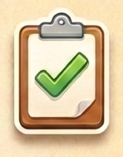
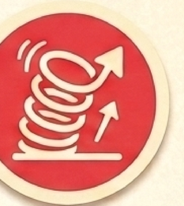
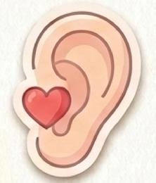
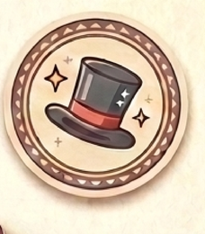
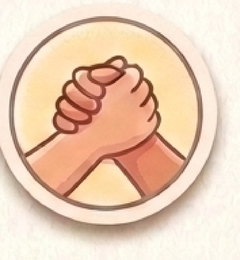
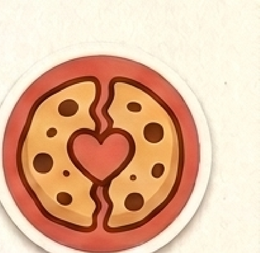
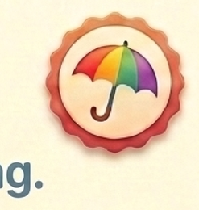
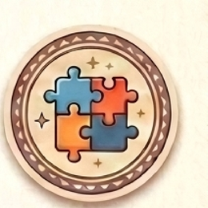

我的品格超能力My Superpowers
11 個品格，3 種超能力
用心裡想的、用嘴巴說的、用雙手做的——點一下卡片，看看每個超能力在說什麼。Tap a card to reveal what each superpower means.
Heart · 用心裡想的
心裡的超能力
藏在心裡、沒有人看見時也要做到的超能力，讓自己一天比一天更棒。
誠實Honesty▾
說實話，不會讓愛消失。就算犯了錯，誠實永遠是更勇敢的選擇。

負責Responsibility▾
做好自己該做的事，大家都會信任你。就算沒人盯著，也要把答應的事完成。

毅力Perseverance▾
努力不放棄，就會等到進步。跌倒不是結束，願意再站起來才會更堅強。
勇敢Courage▾
勇敢跨出去，就會發現自己做得到。心跳加速時，深吸一口氣就是最好的開始。
Words · 用嘴巴說的
說出口的超能力
說出來的每一句話，都能讓身邊的人感覺被在乎、被靠近。

尊重Respect▾
尊重別人說話，也是在尊重自己。安靜下來，專心聆聽，就是最好的尊重。
感恩Gratitude▾
說聲謝謝，溫暖會傳下去。記住別人對你的好，也把這份心意傳出去。

禮貌Politeness▾
一句請、一句謝謝，讓彼此更靠近。幾個禮貌的字，就能讓請求變得溫暖。
Hands · 用雙手做的
做出來的超能力
用實際的行動關心身邊的人，讓大家在一起更舒服、更快樂。

互助Helping Others▾
互相幫忙，讓朋友更靠近。看見別人需要幫忙時，一個小動作就能帶來大溫暖。

分享Sharing▾
分享讓快樂變成兩倍。當你擁有夠多，就分一點給需要的朋友。

同理心Empathy▾
留意別人的心情，是關心的第一步。不必解決所有事，陪伴就已足夠。

合作Teamwork▾
合作，讓大事變得容易。當每個人都做好自己的部分，再大的任務也會變簡單。
點開每個卡片，就能看到搭配的班經動畫影片。